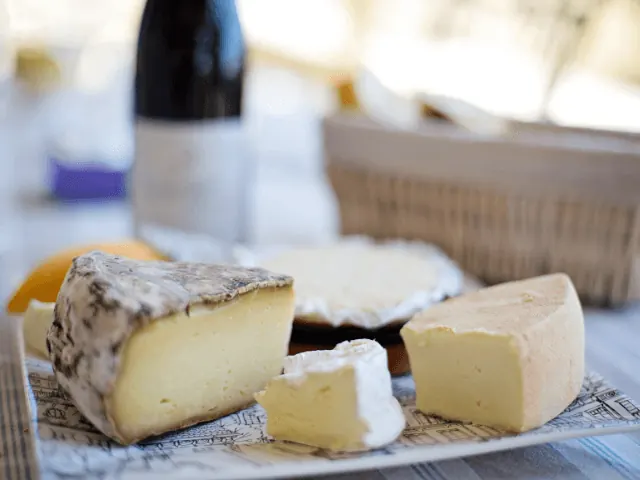

Waarom een Cursus Frans in Nijmegen Kiezen?
Gepubliceerd op 18 januari 2024
Onderdeel van de gids Cursussen in Nijmegen

Cursus Frans in Nijmegen
Nijmegen is een uitstekende keuze voor het volgen van een cursus Frans. Of je nu een beginner bent of je vaardigheden wilt verbeteren, Nijmegen biedt een breed scala aan mogelijkheden. Deze stad herbergt diverse erkende taalinstituten, waaronder Radboud in’to Languages, De Opstap en LTC Nijmegen, die cursussen aanbieden variërend van algemeen tot technisch Frans. Ook zijn er speciale cursussen voor zakelijk Frans beschikbaar. Elk instituut heeft zijn eigen unieke aanpak, met aandacht voor zowel de taal als de cultuur. Door de persoonlijke benadering en flexibele leeropties, waaronder online mogelijkheden, kun je in Nijmegen Franse taalvaardigheden opbouwen die passen bij jouw doelen en niveau.
Veelgestelde vragen cursus Frans in Nijmegen
Wat maakt een cursus Frans in Nijmegen uniek?
Elke aanbieder biedt een unieke combinatie van kwalitatief hoogstaand onderwijs en persoonlijke aandacht in de lessen. De cursussen zijn ontworpen om studenten een volledige taalervaring te geven, verrijkt met culturele aspecten van de Franse taal.
Is Frans leren op elk niveau mogelijk bij een aanbieder in Nijmegen?
Ja, elke aanbieder in Nijmegen heeft Franse cursussen beschikbaar voor alle niveaus, van beginners tot gevorderden. Dit maakt het mogelijk om een cursus te vinden die aansluit bij je huidige taalniveau.
Hoe lang duurt een gemiddelde cursus Frans in Nijmegen?
De duur van Franse cursussen in Nijmegen varieert per cursus en aanbieder. Sommige kunnen kortlopende intensieve cursussen zijn, terwijl andere uitgebreidere programma’s bieden die enkele maanden duren of zelfs een jaartraject hebben.
Kan je ook online frans leren bij een aanbieder in Nijmegen?
Ja, met de groei van digitale onderwijsmogelijkheden bieden een aantal instituten in Nijmegen nu ook online Franse cursussen aan, wat een flexibele optie is voor mensen met een druk schema. Vraag het na bij de aanbieder.
Kan ik na het volgen van een cursus Frans in Nijmegen een officieel certificaat krijgen?
Dit verschilt per aanbieder. Bij de één wordt je klaargestoomd voor officiële certificaten zoals:
- DELF (Diplôme d’Études en Langue Française),
- TCF (Test de connaissance du Français)
- TEF (Test d’Evaluation de français).
Vraag dit na bij de aanbieder wanneer je hier voor wilt gaan. Een frans certificaat kan bijzonder nuttig zijn voor uw professionele of academische doeleinden.

Radboud in’to Languages
Radboud in’to Languages biedt diverse Franse taalcursussen aan in Nijmegen, variërend van beginnersniveau tot gevorderde niveaus. Deze cursussen zijn ontworpen om de Franse taalvaardigheid te verbeteren, met aandacht voor zowel spreken, schrijven, lezen als luisteren. Geschikt voor studenten, professionals en anderen geïnteresseerd in het leren van Frans, biedt Radboud in’to Languages een flexibele leeromgeving met deskundige begeleiding. De cursussen zijn toegankelijk en aangepast aan verschillende leerbehoeften, wat ze ideaal maakt voor iedereen die zijn of haar Franse taalvaardigheden wil ontwikkelen in Nijmegen.
Leer Frans bij de Opstap in Nijmegen
De “Cursus Frans voor beginners” aangeboden door Stichting De Opstap in Nijmegen is gericht op mensen met weinig tot geen kennis van het Frans. De cursus helpt deelnemers om basisvaardigheden zoals jezelf voorstellen en de weg vragen in het Frans te leren. Naast eenvoudige zinnen en grammatica, is er ook aandacht voor de Franse cultuur. De cursus maakt gebruik van het boek “C’est bien ça, deel 1” en vereist ongeveer 1 à 2 uur huiswerk per week.
De Franse taal leer je natuurlijk bij 123Francais
123Français, gevestigd in Nijmegen en Maastricht, biedt op maat gemaakte Franse taalcursussen aan voor verschillende niveaus en doelen, zoals werk, studie, vakantie of plezier. Met 12 jaar ervaring bieden de native speaker docenten, Maryline en Claude, een unieke methode gericht op spreekvaardigheid. De cursussen combineren grammatica, woordenschat, luistervaardigheid en conversatie, met nadruk op praktisch taalgebruik. De individuele benadering begint met een intakegesprek voor een persoonlijk leerplan. Cursussen variëren van privélessen tot kleine groepen, met flexibiliteit in planning en locatie.
Cursus Frans bij de Volksuniversiteit
De Volksuniversiteit biedt een breed scala aan Franse taalcursussen, zowel voor beginners als voor gevorderden. De cursussen worden ingedeeld op basis van het Europees Referentiekader, zodat deelnemers een cursus kunnen kiezen die bij hun niveau past. De cursussen omvatten zowel theoretische als praktische elementen. Docenten bij de Volksuniversiteit zijn gepassioneerd over Frankrijk en streven ernaar dit enthousiasme over te brengen op de cursisten, met een focus op plezier in het leren van de Franse taal. Voor mensen met eerdere ervaring in het Frans is het mogelijk om op een hoger niveau in te stromen, vaak na een intakegesprek met de docent.
De Taaltrainer helpt je bij het leren van de Franse Taal
De Taaltrainer biedt incompanytrainingen Zakelijk Frans aan, waarbij de focus ligt op het verbeteren van de communicatie met Franstalige zakenpartners. Deze trainingen worden op maat gemaakt en kunnen variëren van wekelijkse lessen tot intensieve programma’s, afhankelijk van de wensen en doelstellingen van het bedrijf. De trainingen richten zich op diverse aspecten, zoals zakelijke spreekvaardigheid, e-mailen, telefoneren, presenteren, vergaderen, en uitbreiden van vaktechnische woordenschat. De trainingen worden gegeven op alle niveaus (A1 tot C2) en deelnemers ontvangen een certificaat bij voldoening.
Gespecialiseerde cursus Technisch Fransbij LTC Nijmegen
LTC Nijmegen biedt een gespecialiseerde cursus Technisch Frans aan, gericht op professionals die in een technische context werken en communiceren met Franstaligen. De cursus is bedoeld om relevante vaktechnische vocabulaire te vergroten en verbetert schrijf-, spreek-, luister- en leesvaardigheid in het Frans. De cursusinhoud is aanpasbaar en omvat diverse modules zoals het geven en begrijpen van instructies, lezen van bedieningsvoorschriften, en onderhoudsinstructies. De trainingen worden gegeven in privé- of groepslessen, afhankelijk van de voorkeur, en zijn afgestemd op praktische toepassing.
Conclusie
Kiezen voor een cursus Frans in Nijmegen is een uitstekende beslissing, gezien de veelzijdige aanbod en deskundige begeleiding die de stad biedt. Of je nu beginner bent of gevorderd, er is voor elk niveau een geschikte cursus. De instituten zoals Radboud in’to Languages, De Opstap, LTC Nijmegen en anderen bieden een breed scala aan cursussen, van algemeen tot technisch en zakelijk Frans. Deze cursussen zijn niet alleen gericht op taalvaardigheden, maar ook op de Franse cultuur, met flexibele en persoonlijke benaderingen, waaronder online mogelijkheden. Nijmegen is dus de ideale plek voor iedereen die zijn Franse taalvaardigheden wil verbeteren of ontwikkelen. Mocht onverhoopt de Franse taal toch niet voor je zijn weggelegd, bekijk dat één van de andere cursussen welke je in ons cursusoverzicht kan vinden.